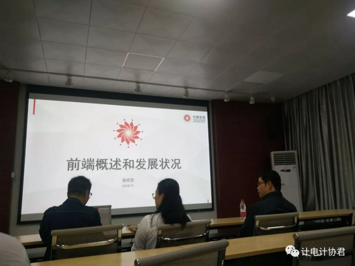
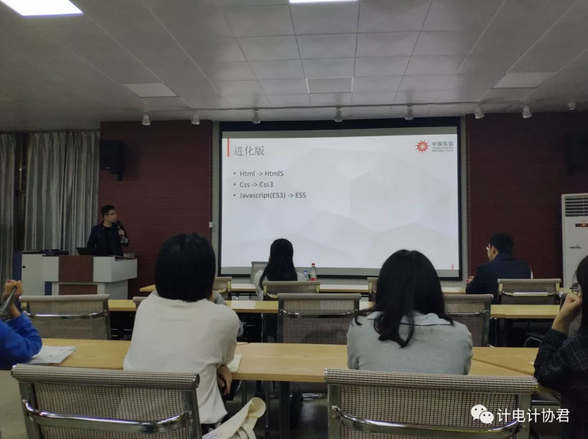
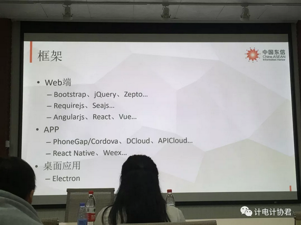
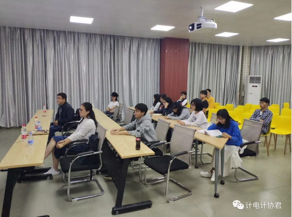

“工程师走进校园”系列讲座第三弹来啦！
此次讲座于2018年11月9日晚上8点学院一楼活动厅召开！
我们请到了来自中国—东盟信息港股份有限公司两位非（颜）常（值）优（超）秀（高）的工程师——谢武龙、何苇。
他们热情地为同学们介绍了前端概述和发展状况。

不少同学要问啦，什么叫前端开发工程师？
简单来说，前端开发工程师是一个把技术和设计完美融合在一起的职业！
他们的主要工作是对面向用户的界面进行开发，不断提升用户体验！
例如：Web前端工程师的职责是编写网页标准优化代码，并增加交互动态功能，开发JavaScript以及Flash模块，同时结合后台开发技术模拟整体效果，进行丰富互联网的Web开发，致力于通过技术改善用户体验。（摘自百度）
最近双十一剁手之地——淘宝页面。
就是由前端开发工程师做出来的！
前端开发工作，也是一块非常大的蛋糕呀！
遗憾的是，目前大学本科教育，
并没有开设前端工程师的专业课程！
并！没！有！
那么，我们要如何成为一名前端开发工程师？
自！学！啊！
重点来了！敲黑板！
基础知识栈：HTML、CSS、Javascript
进化版：HTML->HTML5、CSS->CSS3、Javascrpt->ES5.
这是我们获取核心技术的主攻的方向！

其次，要用什么工具来实现呢？
噔噔噔！前端开发框架华丽登场！

谢工介绍了很多前端工程师工作行业的趣事，同时也告诉我们从事这一行，需要不断地学习新技术，除了掌握岗位硬性技术之外，还应该掌握一门后端开发语言，这样才能更好地与后端对接，做好前端工程师的工作。
我们漂亮的程序媛——何工为我们介绍了自己的学习经验，也告诉女孩子一句很关键的话哦：
“女孩子们要摆正心态，
很多时候，
工作上的事与性别无关，
只跟工作能力有关。”

（讲座现场）
最后的问答环节大家非常热情，在这提两个干货问答吧！
Q1：请问要自学到什么程度才能有底气去应聘呢？
A1：前端其实入门门槛低，但是入行技术深。
在学校的时候尽量看书，去网上找一些现成的代码好好钻研，尽量模仿。
当你可以写出像淘宝首页的页面效果时，就可以信心满满地去应聘啦！
Q2：各位工程师好！我今年大四了，个人想从事前端开发工作，但应聘时总觉得用人单位比较看轻前端，想问问有什么方法可以提高自己的竞争力呢？
A2：确实存在有一些公司比较轻视前端的现象，但是事实上，看轻并不代表企业不想在这一块做好。
在用户体验感越来越重要的当下，很多公司都缺少专业的前端开发工程师。
在掌握岗位技术能力情况下，应聘时展现出自己的亮点可以为自己争得很大的赢面。
可以提前看看应聘的公司网页、APP页面等，看看有什么可以改进的地方，同时比较谦虚地提出自己的解决建议。
附上一个知乎小链接：前端开发工程师必读书籍有哪些值得推荐？
https://www.zhihu.com/question/22591993
好啦！这就是今天的所有内容！
下次大家可以一起去听讲座，吃干货！
记得关注计协君哦！
编辑：黄艺杨
图片：龙泽宇、冯双双
排版：黄艺杨
审核：陈嘉浩